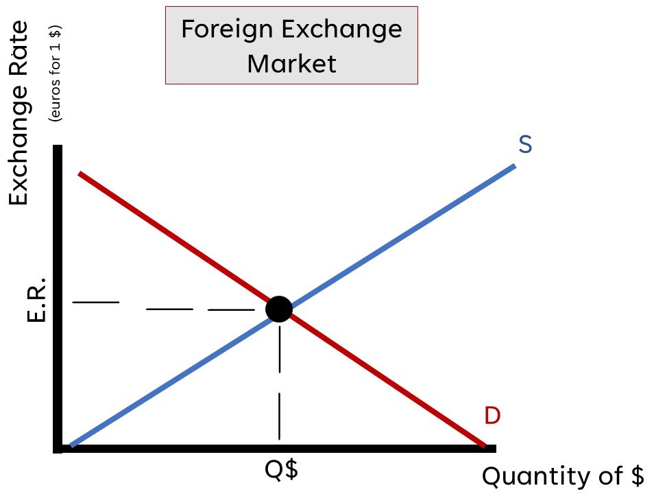

Balance of Payments Accounts
Current Account
Net Exports: the difference in the value of all exported and imported goods; also called the
balance of trade
Net Investments: net interest earned from financial investments
Net Transfers: the difference in the value of all exported goods
Capital Account
Financial Investments: net purchases of foreign financial assets
Real Investments: net purchases of foreign land and businesses
Tip: if the money is flowing out of the country, it is negative
Tip: if the money is flowing into the country, it is positive
Exchange Rates
Appreciation: when the value of a country's currency increases in respect to another country
Depreciation: when the value of a country's currency decreases in respect to another country
Exchange Rate: the price at which one foreign nation's unit of currency can be converted to the
currency of another nation
Foreign Exchange Market
The FOREX market is composed of the supply of money and the foreign demand for money. The FOREX market works
with flexible exchange rates, and they gravitate toward the equilibrium
Effect of Policies/Economic Conditions on the FOREX
Determinants of the Foreign Demand for Domestic Currency
1) Foreign Tastes (ex. "Tourists from all over the world travel to Mexico for Vacation" will cause the
demand/value of the peso to increase
2) Trade Prices (ex. "The price of U.S. exports increase" would decrease the demand/value of the U.S.
dollar
3) Income Levels (ex. "Economic boom causes income levels to increase for Chinese consumers" will
cause
the demand/value of the $$$ to increase
4) Real Interest Rates (ex. "Japanese real interest rates are higher than the U.S.'s" will cause the
demand/value for the Yen to increase
Special Note: Between two nations, if the demand of one's currency increases, the supply of
that of another country's will increase as well!
Changes in the FOREX and Net Exports
Expansionary Policy

Real GDP Output: Decrease
National Income Level: Decrease
U.S. Export Prices: Decrease
Value of the U.S. Dollar: Increase
Contractionary Policy

Real GDP Output: Increase
National Income Level: Increase
U.S. Export Prices: Increase
Value of the U.S. Dollar: Decrease